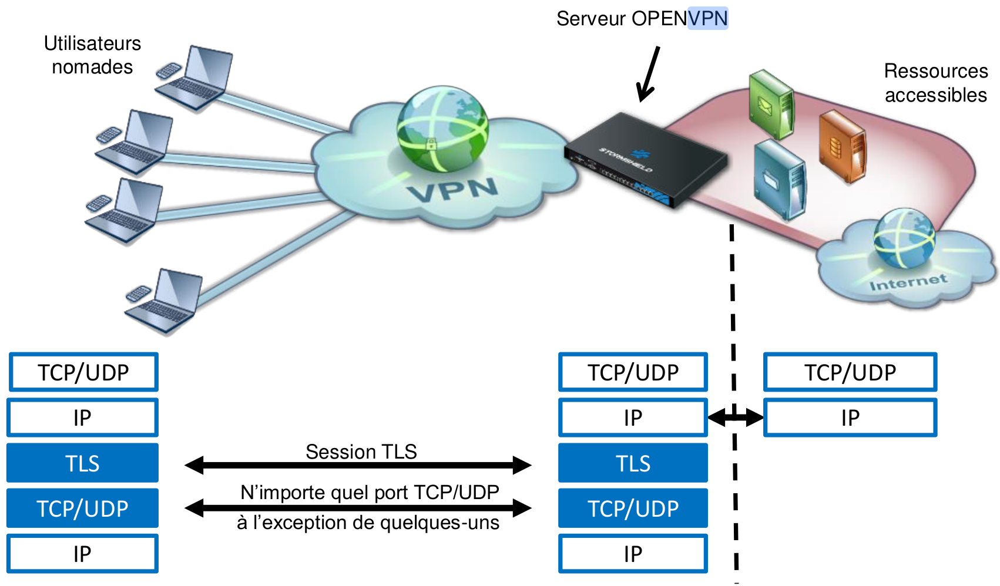
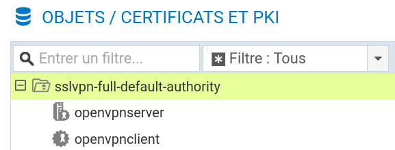
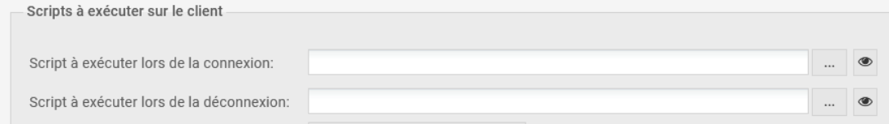
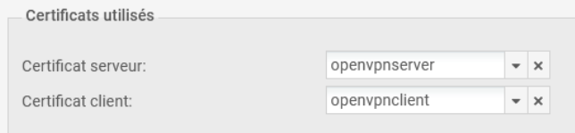
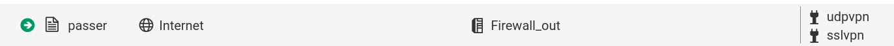
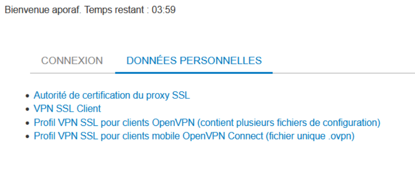
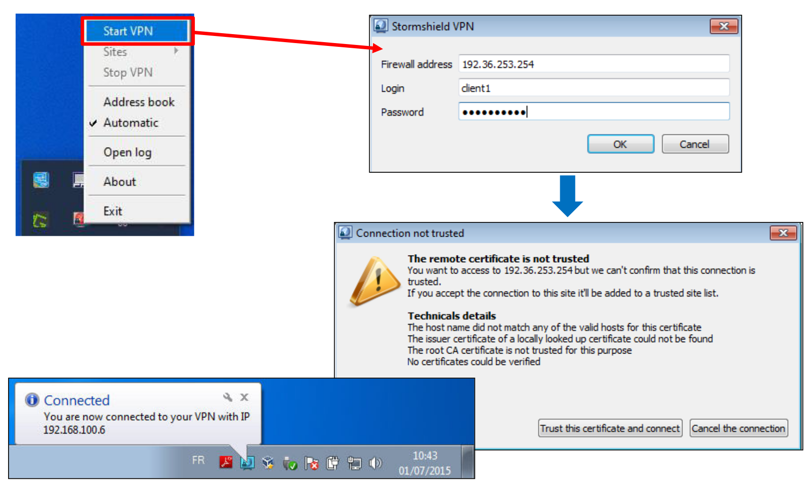
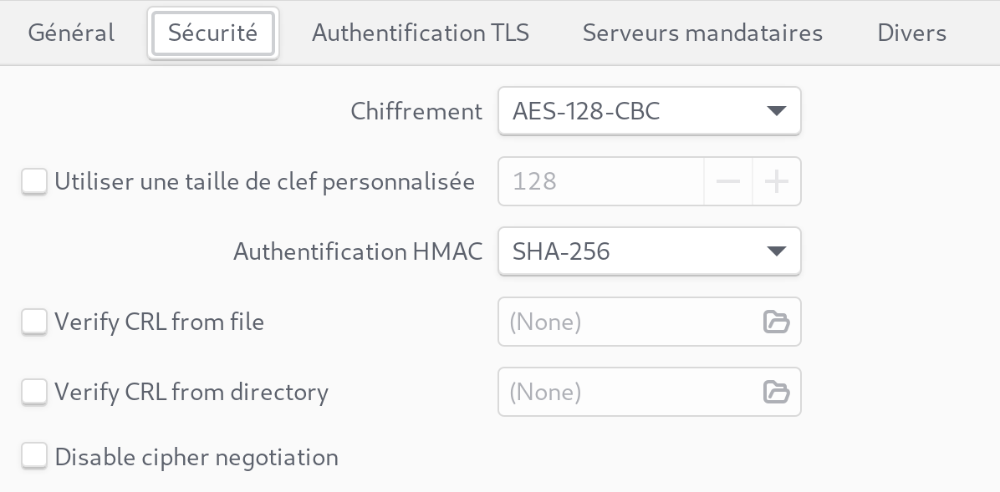
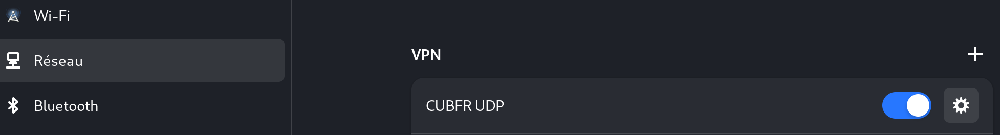
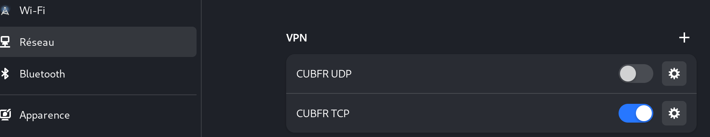

Fiche 12 -- VPN pour utilisateurs nomades
Le VPN SSL
Les pare-feux Stormshield intègrent deux types de VPN SSL qui peuvent être utilisés simultanément :
- VPN SSL portail qui permet l'accès aux serveurs Web HTTP et serveurs applicatifs via le portail captif après authentification.
- VPN SSL (complet) qui permet l'accès au réseau interne d'une manière transparente.
La fiche ne concerne que le VPN SSL en mode complet.
Concepts et généralités

Le VPN SSL permet à des utilisateurs distants d'accéder de manière sécurisée aux ressources internes d'une entreprise. Les communications entre l'utilisateur distant et le pare-feu sont encapsulées et protégées via un tunnel TLS chiffré. L'établissement de ce tunnel est basé sur la présentation de certificats serveur et client signés par une autorité de confiance (CA). Cette solution garantit donc authentification, confidentialité, intégrité et non-répudiation.
Au niveau du pare-feu, les tunnels VPN SSL sont gérés par le serveur OpenVPN (logiciel libre) qui est intégré dans le firmware en tant que nouveau service. OpenVPN peut fonctionner sur n'importe quel port TCP (par défaut 443) et/ou UDP (par défaut 1194), à l'exception de quelques-uns, qui sont utilisés pour les processus internes du pare-feu.
Le fonctionnement sur le port TCP 443 offre un accès aisé depuis les réseaux avec filtrage d'accès à Internet (hôtels, wifi public, connexion 3G, etc.).
En ce qui concerne les utilisateurs nomades, le tunnel est géré par le client VPN SSL (Stormshield ou openVPN standard), qui doit être installé et configuré sur les machines. Ce client est installable sur tout type de terminal (Windows, IOS, Android, etc.). Les différents éléments de configuration (certificats, fichier de conf, etc.) sont récupérés sur le portail captif. Une fois le tunnel mis en œuvre, l\'hôte distant récupère une adresse IP fournie par le serveur VPN SSL. Elle sera considérée comme faisant partie des réseaux internes (protégés) du pare-feu et l'utilisateur sera vu comme authentifié.
La mise en œuvre du tunnel VPN SSL s'effectue en trois étapes principales :

-
Le client VPN SSL authentifie l'utilisateur via le portail captif. Durant cette étape, le pare-feu vérifie si l'utilisateur authentifié possède les droits lui permettant d'ouvrir un tunnel VPN SSL.
-
Si l'authentification réussit, le client envoie une requête pour récupérer les fichiers de configuration renvoyés par le pare-feu dans un dossier compressé « openvpn_client.zip ». Le dossier contient les fichiers suivants :
- Le certificat de l'autorité de certification (CA.cert.pem),
- Le certificat du client et sa clé privée (openvpnclient.cert.pem et openvpnclient.pkey.pem),
- La configuration du client OpenVPN.
-
Le client lance le processus de mise en œuvre du tunnel TLS avec authentification par certificat à l\'aide des certificats récupérés lors de l'étape précédente. Avant la mise en œuvre du tunnel, le pare-feu vérifie que le nombre maximal d'utilisateurs n'est pas encore atteint et qu'un sous-réseau peut être réservé pour ce nouveau client. Si toutes les conditions sont vérifiées, le tunnel est mis en œuvre et l'utilisateur est considéré comme authentifié.
Info
Si le serveur VPN SSL est accessible via un port UDP ou TCP, le client VPN SSL tente d'abord de mettre en œuvre le tunnel avec le protocole UDP et en cas d'échec, il effectue automatiquement une nouvelle tentative avec le protocole TCP.
Configurer le service VPN SSL
Préalables
La première étape de mise en œuvre d'un tunnel VPN SSL est l'authentification de l'utilisateur via le portail captif, ce qui signifie :
- qu'un annuaire externe ou interne doit être configuré au niveau du pare-feu (voir fiche 10) ;

- qu'une méthode d'authentification doit être configurée :

- qu'un profil du portail captif doit être rattaché à l'interface depuis laquelle les utilisateurs se connectent :

Les méthodes d'authentification possibles pour le service VPN SSL sont les méthodes explicites qui nécessitent un couple identifiant/mot de passe, en l'occurrence LDAP (interne, externe ou Microsoft Active Directory), Kerberos et Radius.
Des certificats seront utilisés pour l'authentification entre le client et le serveur VPN SSL. Pour cela, une autorité de certification racine (CA) existe dans la configuration usine de tous les pare-feux Stormshield Network. Cette CA est nommée sslvpn-full-default-authority, et elle contient un certificat serveur (qui identifie le serveur VPN SSL), et un certificat client (qui identifie tous les clients : chacun d'entre eux sera ensuite différencié par un couple login/mot de passe).

Configuration du serveur SSL
- Cliquer sur le module Configuration > VPN > VPN SSL et activer le Activer le VPN SSL.

Paramètres réseaux
-
Indiquer l'adresse IP ou le FQDN pour lequel le pare-feu Stormshield Network sera joignable pour établir les tunnels VPN SSL. Ce doit être une adresse IP publique (accessible sur Internet) ou une adresse IP privée accessible via une redirection.
-
Dans le champ Réseaux ou machines accessibles, sélectionner ou créer l'objet représentant les réseaux et/ou machines qui seront joignables au travers du tunnel SSL. Cet objet peut être un réseau, une machine ou un groupe incluant des réseaux et / ou des machines.
Info
Il sera nécessaire de définir les routes nécessaires pour joindre l'ensemble des ressources et d'affiner les règles de filtrage.
-
Paramètres DNS envoyés au client
-
Indiquer le suffixe DNS qui sera utilisé par les clients pour réaliser leurs résolutions de noms d'hôtes.
-
Préciser les serveurs DNS primaire et secondaire à lui attribuer.
Important
Les réseaux assignés aux clients UDP et TCP doivent être différents. Choisir des réseaux entièrement dédiés aux clients VPN SSL et n'appartenant pas aux réseaux internes existants ou déclarés par une route statique. En effet, l'interface utilisée pour le VPN SSL étant protégée, le pare-feu détecterait alors une tentative d'usurpation d'adresse IP (spoofing) et bloquerait les flux correspondants.
Astuce
Afin d'éviter des conflits de routage sur les postes clients lors de la connexion au VPN, choisir plutôt, pour vos clients VPN, des sous-réseaux peu communément utilisés (exemple : 10.60.77.0/24, etc.). En effet, de nombreux réseaux d'accès internet filtrés (wifi public, hôtels, etc) ou réseaux locaux privés utilisent les premières plages d'adresses réservées à ces usages (exemple : 10.0.0.0/24, 192.168.0.0/24).
Le nombre maximum de tunnels simultanés est automatiquement calculé et affiché. Par exemple, pour une plage en /24, seules 63 adresses sont disponibles. Cela correspond au minimum des deux valeurs suivantes :
-
- Le quart du nombre d'adresses IP, moins une, incluses dans le réseau client choisi. Un tunnel SSL utilise en effet 4 adresses IP,
- Le nombre maximal de tunnels autorisés selon le modèle de pare-feu utilisé.

- Sélectionner l'objet représentant l'adresse IP de L'UTM pour permettre un accès via le port UDP.
Il vous est aussi possible de personnaliser le laps de temps (en secondes) au terme duquel les clés utilisées par les algorithmes de chiffrement seront renégociées (étapes 1 et 2 de l'établissement de tunnel). La valeur par défaut est de 4 heures (14400 secondes).
- Scripts à exécuter sur le client
Vous pouvez sélectionner des scripts que Stormshield Network SSL VPN Client exécutera lors de la connexion et/ou déconnexion au pare-feu (uniquement sur Windows). Il est possible, par exemple, de connecter/déconnecter automatiquement un lecteur réseau Windows par cette méthode. Un exemple de script est présenté dans la section Pour aller plus loin.

- Certificats utilisés

Les certificats que doivent présenter le service VPN SSL du pare-feu et le client pour établir un tunnel sont créés par défaut.
Si vous choisissez de créer votre propre CA, vous devez utiliser deux certificats, et leur clé privée respective, signés par celle-ci. S'il ne s'agit pas d'une autorité racine, les deux certificats doivent être issus de la même sous-autorité.
Configuration des droits d'accès au VPN SSL
- Se rendre au menu Configuration > Utilisateurs > Droits d\'accès, l'onglet Accès par défaut permet d'autoriser ou d'interdire l'utilisation du VPN SSL à l'ensemble des utilisateurs sans aucune distinction.

Pour autoriser des utilisateurs spécifiques (recommandé par Stormshield), il faut laisser « Interdire » ici puis :
- Cliquer sur l'onglet « Accès détaillé » et cliquer sur Ajouter afin de créer une règle d'accès personnalisée.
- Activer la règle (colonne Etat), sélectionner les utilisateurs ou le groupe d'utilisateurs autorisés (colonne Utilisateur -- groupe d'utilisateurs) et choisir l'action Autoriser dans la colonne VPN SSL.

Méthode d'authentification
Définition des règles de filtrage pour autoriser / interdire les flux entre les clients VPN SSL et les ressources internes
-
Ajouter les règles nécessaires de filtrage au pare-feu comme :
-
celle autorisant n'importe quelle adresse IP sur Internet à se connecter sur le service VPN (1194/UDP ou 443/TCP) du pare-feu sur son interface externe ;

- l'initiation de connexions à partir des clients VPN SSL et à destination des serveurs Web internes
- permettre aux clients vpn d'accéder à Internet ;
-
etc.
-
Ajouter ou modifier si besoin la règle NAT permettant aux clients d'utiliser le VPN SSL pour accéder à internet.
Info
**Les tunnels VPN SSL sont compatibles avec les fonctions avancées de filtrage du pare-feu Stormshield Network. Les règles de filtrage peuvent donc faire appel aux profils d'inspection, proxies applicatifs, contrôle antiviral, etc.
Info
Pour permettre aux clients VPN SSL d'accéder au portail d'authentification sur les interfaces associées aux profils d'authentification du pare-feu, la règle de filtrage implicite nommée Autoriser l'accès au portail d'authentification et au VPN SSL pour les interfaces associées aux profils d'authentification (Authd) doit être activée.
Si tel n'est pas le cas, il est impératif d'ajouter des règles de filtrage explicites dans la politique active autorisant les flux à destination de l'interface publique sur le port d'écoute du service.
Installation et configuration du client VPN SSL
Il est possible de configurer un client VPN sur n'importe quel système d'exploitation. Il ne sera développé ci-après que les procédures sur Windows et Linux.
Pour aller plus loin au niveau des détails et de l'installation du client sur d'autres systèmes : https://documentation.stormshield.eu/SNS/v4/fr/Content/SSL_VPN_tunnels/Installation_and_configuration_of_the_client.htm.
Sur Windows, il est possible d'utiliser le client VPN de Stormshield. Ce client peut être téléchargé sur l'espace privé https://mystormshield.eu et sur le portail captif du pare-feu après authentification :

Configuration du client VPN SSL Stormshield Network
- Télécharger « VPN SSL client » sur le portail captif (https://(@IP_pare-feu | FQDN_pare-feu)/auth).
Information
VPN SSL Client ne peut être utilisé que sous un seul profil utilisateur Windows. Il doit donc être impérativement installé sous le profil Windows de l'utilisateur final du logiciel.
Vigilence
D'autre part, cette installation requiert une élévation de privilèges. Si l'utilisateur ne possède pas les droits d'administration sur le poste de travail, il devra fournir, au cours de l'installation, le nom et le mot de passe d'un compte ayant les droits d'administration.
-
Faire un double clic sur l'exécutable enregistré sur le poste de travail.
-
Suivre les différentes fenêtres proposées par l'assistant d'installation. Seuls le chemin d'installation et un groupe de programme à associer sont éventuellement à personnaliser.
Le téléchargement et l'intégration des fichiers de configuration sont réalisés automatiquement lors de l'utilisation de « Stormshield Network SSL VPN Client ». Après authentification et validation du droit à l'utilisation du VPN SSL, le client récupère l'ensemble des données nécessaires pour se configurer.
-
Démarrer et paramétrer le client. Une fois démarré, le client VPN SSL nécessite trois paramètres :
-
l'adresse IP ou le FQDN du pare-feu à contacter :
- l'adresse IP ou le FQDN doit bien évidemment être accessible soit directement soit via une redirection ;
-
si le port n'est pas le port par défaut (1194 en UDP et 443 en TCP), l'adresse IP ou le FQDN doit être suivi de « :numero_port »

-
l'identifiant de l'utilisateur disposant des droits pour le VPN SSL ;
-
Le mot de passe de l'utilisateur.
Une fenêtre indique que la connexion à ce site n'est pas sécurisée, car le client ne fait pas confiance à la CA signataire du certificat serveur présenté par le portail captif du pare-feu. Il est donc possible :
-
d'afficher le certificat pour savoir quelle CA l'a signé ;
-
de faire confiance à ce certificat, ce qui signifie que la CA est ajoutée aux autorités de confiance et qu'il est possible de continuer avec la configuration du tunnel ;
- d'annuler la connexion, ce qui arrêtera la configuration du tunnel.
L'icône du client VPN SSL Stormshield qui apparaît dans la zone de notification de la barre de tâches de Windows possède un code couleur qui correspond à son état :
- Rouge : le client est déconnecté,
- Jaune : le client essaye de mettre en œuvre le tunnel,
- Bleu : le client est connecté (lorsque le client est connecté, des informations sur la connexion apparaissent lorsque le curseur de la souris est positionné sur l'icône.)
La page de supervision du pare-feu permet de visualiser (et éventuellement supprimer en déconnectant l'utiliateur) les tunnels VPN SSL ouverts dans l'onglet Supervision => tunnels VPN SSL .

Les utilisateurs connectés via un tunnel VPN SSL sont considérés comme authentifiés et peuvent être visualisés dans les traces.
Info
En cas d'échec de la configuration du tunnel, faire un clic droit sur l'icône VPN SSL Stormshield Network pour afficher les traces.
Le client VPN SSL Stormshield possède une fonction de carnet d'adresses, qui peut aider à sauvegarder différents profils VPN dans un seul fichier chiffré. Le mot de passe utilisé pour protéger le fichier est spécifique. Pour ajouter une entrée au carnet d'adresses :
- Cliquer sur le bouton « Ajouter », renseigner les détails et cliquer sur « OK » pour sauvegarder.
Info
Il est également possible d'importer/exporter des entrées. Le carnet
d'adresses se trouve à l'emplacement suivant :
%USERPROFILE%\AppData\Local\Stormshield\Stormshield SSL VPN Client\AddrBook.gap
Lorsque le tunnel est monté, le poste client disposera d'une interface spécifique au tunnel VPN SSL dont l'adresse IP fait partie de l'objet Réseau assigné au client de la configuration serveur. Les routes nécessaires sont automatiquement créées. Par exemple sur Linux :
route -n
Table de routage IP du noyau
Destination Passerelle Genmask Indic Metric Ref Use Iface
0.0.0.0 10.60.50.5 0.0.0.0 UG 50 0 0 tun0
10.60.50.0 10.60.50.5 255.255.255.0 UG 50 0 0 tun0
10.60.50.1 10.60.50.5 255.255.255.255 UGH 50 0 0 tun0
10.60.50.5 0.0.0.0 255.255.255.255 UH 50 0 0 tun0
10.61.50.0 10.60.50.5 255.255.255.0 UG 50 0 0 tun0
10.61.50.1 10.60.50.5 255.255.255.255 UGH 50 0 0 tun0
172.16.5.0 10.60.50.5 255.255.255.0 UG 50 0 0 tun0
192.168.5.0 10.60.50.5 255.255.255.128 UG 50 0 0 tun0
192.168.5.128 10.60.50.5 255.255.255.192 UG 50 0 0 tun0
192.168.5.192 10.60.50.5 255.255.255.192 UG 50 0 0 tun0
Résultat
On peut voir qu'une route par défaut est créée ⇒ Du moment que le poste est intégré au VPN toutes les communications (y compris l'accès à Internet) passe par le pare-feu Stormshield. Il est possible de modifier ce comportement mais cela n'est pas conseillé pour des raisons évidentes de sécurité.
Configuration du client openVPN SSL sur Linux
Le fichier « openvpn_client.zip » doit être récupéré sur portail captif de Stormshield et décompressé. Il comprend le fichier de conf du profil (voir ci-dessous) et les certificats :
dev tun
remote 192.36.253.50 1194 udp
remote 192.36.253.50 443 tcp
cipher AES-256-CBC
tls-cipher TLS-ECDHE-RSA-WITH-AES-128-CBC-SHA256
auth SHA256
nobind
resolv-retry infinite
persist-key
persist-tun
ca \"CA.cert.pem\"
cert \"openvpnclient.cert.pem\"
key \"openvpnclient.pkey.pem\"
compress lz4
verb 0
auth-user-pass
auth-retry interact
auth-nocache
reneg-sec 0

-
Se rendre au menu Paramètres / Réseau et cliquer sur « + » au niveau du VPN
-
Cliquer sur l'onglet « Identité »
Ici, le FQDN « cub.corsica » est résolu par l'adresse IP publique et le port 1195 est redirigé vers le port UDP/1194 du pare-feu Stormshield.
- Cliquer sur « Advanced »

Il s'agit ici du port d'écoute en UDP du serveur VPN configuré sur le pare-feu.

-
Cliquer sur l'onglet « Sécurité
 - Enregistrer en cliquant sur « Appliquer » et activer le VPN
Configuration sur Linux en TCP avec network-manager (seuls les éléments modifiés sont précisés) :
 - Se rendre au menu Paramètres / Réseau et cliquer sur « + » au
niveau du VPN
- Se rendre au menu Paramètres / Réseau et cliquer sur « + » au
niveau du VPN
- Cliquer sur l'onglet « Identité »
Ici, le FQDN « cub.corsica » est résolu par l'adresse IP publique et le port 4435 est redirigé vers le port TCP/443 du pare-feu Stormshield.
- Cliquer sur « Advanced »

Il s'agit ici du port d'écoute en TCP du serveur VPN configuré sur le pare-feu.
- Cocher « Utiliser une connexion TCP » car, par défaut, le client VPN initie une connexion UDP »

- Enregistrer en cliquant sur « Appliquer » et activer le VPN
